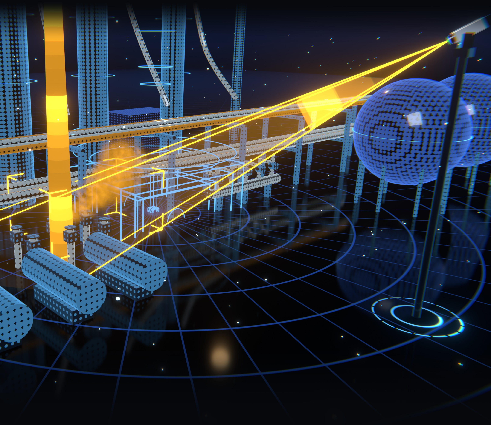

GLD NEXT · KONSEP PENGEMBANGAN
Optical Gas
Imaging
Imaging
Melihat kebocoran hidrokarbon yang tak kasatmata, dari titik ke area.

Ilustrasi 3D
PRINSIP
Gas tak terlihat. Kini tampak.
Kamera inframerah berpendingin menangkap serapan ikatan C–H pada ±3,3 µm, sehingga gas tampak sebagai kontras terhadap latar.
MWIRPita 3–5 µm, detektor ≈ −196 °C
±100 mTarget jangkauan dari tiang ±10 m
AI plumeSegmentasi otomatis, konfirmasi multi-frame
GLD + OGITitik dan area dalam satu dashboard
Kamera MWIR→Edge server→Dashboard GLD + OGI
Konsep pengembangan tahap berikutnya · spesifikasi target · ilustrasi 3D
PT Pertamina Patra Niaga (Fungsi Reliability) · LAPI Ganesha Utama · Institut Teknologi Bandung